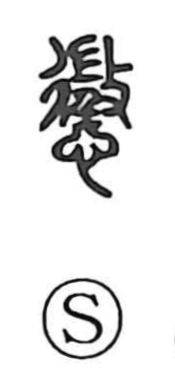

懲

Kun: koriru, korasu, korashimeru | On: chou
to punish ・ to chastise ・ to learn a lesson
Explanation
A phono-semantic character: 懲 employs 徴 as its phonetic, giving the On reading chou. In ancient usage, 徴 referred to a ritual, almost magical act—waylaying an enemy elder, seizing and beating him to compel the fulfillment of a demand. Because this action functioned as an exemplary, shocking punishment, 懲 came to mean to chastise or punish, and by extension to learn a lesson.